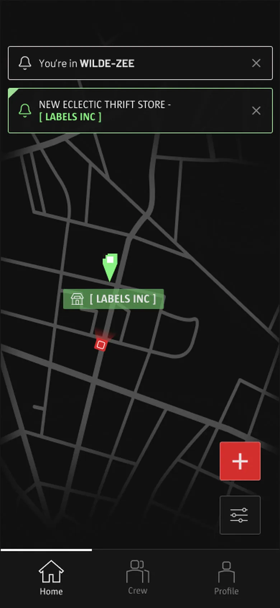
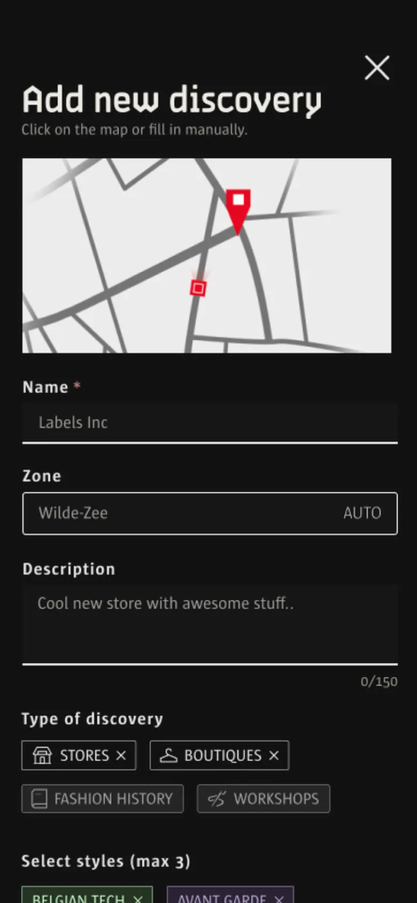

01
A map that starts empty
The core of the app. Every store, workshop and piece of fashion history is a pin stored in Supabase, hidden under fog until you get there. Users can also add their own discoveries, which go straight into the database.

